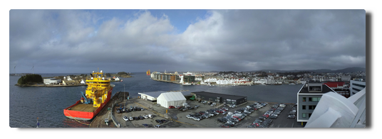

Love Boat - The Real Story. Seetag
Tag 4. Ahoi!
Am Morgen treibt es mich raus und ich drehe vor dem Frühstück eine Runde an Deck. In der Anytime Bar gibt es Kaffee für Frühaufsteher. Ich grüße die herumstehenden Raucher im Vorbeigehen. Nach dem Frühstück okkupiere ich mit Buch und in Decken gehüllt eine Sofaecke draußen auf Deck 11. Es ist windig, wolkig, etwas schön, aber auch ein wenig kalt.
 |
|---|
| Die Gelbdecken demonstrieren für mehr Entspannung und besseres Wetter. |
Das Wetter wird zunehmend schlechter und so verziehe ich mich am frühen Nachmittag und suche im Inneren nach einem ruhigen Plätzchen. Dies erweist sich als gar nicht so einfach, aber die AIDA Bar kristallisiert sich aus verschiedenen Gründen als ein Hauptaufenthaltsraum heraus. Ich bin so inaktiv, dass ich das Mittagessen ausfallen lasse. Es setzt leichte Gereiztheit bei mir ein. Am Nachmittag steht wieder Edutainment auf dem Plan und der Ausflug zum Nordkap wird gebucht.
Ein Tourist tut, was ein Tourist tun muss.
Mehr Wetter
Unser Schiff wird flankiert von zwei Tiefdruckgebieten. Das Hochdruckgebiet über heimatlichen Gefilden führt zu einem regen Luftmassenaustausch zwischen den dreien, als Bonus winkt das Tiefdruckgebiet über Island uns mit schäumenden Wellen über den Atlantik zu.
Kurz: Wir haben Sturm und Wellengang. Viel. Sehr viel.
Was wir auch haben: viel Platz beim Abendessen und an der Bar. Man tänzelt so durch das inzwischen vertraute, wankende Schiff. Das Abendunterhaltungsprogramm wurde wegen des Wetters auf den nächsten Tag verlegt, Deck 6 und 11 sind aus Sicherheitsgründen gesperrt.
Wer nicht seekrank ist, verbringt seine Zeit mit Spiel, Spaß und Spannung in den Bars und träumt vom morgigen Landgang in Bodø.
Orga
Eine nicht so höfliche Möglichkeit, die Zeit auf einem wankenden Schiff zu verbringen, ist es, dem Personal beim Arbeiten zuzusehen.
Nach ein paar Tagen fällt auf: die arbeiten immer (12+ Stunden) und auch stets an den selben Positionen. Man spaziert morgens oben an Deck und der Typ, der die Poolbar öffnet, bringt dir 3 Stunden später einen Kaffee und abends ein Bier. Ich wette, der "Nice Indian Guy" legt danach noch eine Schicht im Crew-Nachtclub ein. Ist der Typ vielleicht ein Vampir...? Das gleiche in den Restaurants: die Typen, den du morgens begrüßt, begrüßt man am Abend wieder.
Und die bleiben so verdammt freundlich dabei! Ich hoffe, die bekommen alle am Monatsende einen angemessenen Batzen Kohle überwiesen, denn ansonsten kann ich so eine Reise nie wieder machen...
 |
|---|
| Das tägliche Personalkarusell in der sternförmigen AIDA Bar |
Use Markdown extensions in Nikola
Inhalt
The default markup language of input files in Nikola is restructuredText. You can, of course, configure Nikola to also process Markdown formatted files but by default there are missing some features like admonitions or table of contents which can be enabled by extensions.
Basic configuration
First things first: you have to edit the variables COMPILERS, POSTS and PAGES of the conf.py and uncomment or add a line in order to make Nikola recognize and render Markdown files:
COMPILERS = { "rest": ('.rst', '.txt'), "markdown": ('.md', '.mdown', '.markdown'), ... } POSTS = ( ("posts/*.rst", "posts", "post.tmpl"), ... ("posts/*.md", "posts", "post.tmpl"), ) PAGES = ( ("pages/*.rst", "pages", "story.tmpl"), ... ("pages/*.md", "pages", "story.tmpl"), )
Markdown extensions
There are two types of Markdown extensions:
Officially supported extensions that are shipped with the python-markdown package.
Third party extensions which have to be installed separately on your system.
Enable
An extension is enabled by adding it to the MARKDOWN_EXTENSIONS variable.
If you want to enable officially supported extensions you add the extensions' entry point as list item. If the extension is part of the extra folder you can use extra as list item or the name of the extension, p.e. you enable definition lists with either def_list or extra.
The list item for a third party extension is the exact dot notation (see the extension's documentation).
Examples
MARKDOWN_EXTENSIONS = [# all extensions of extra available "extra", # other officially supported extensions "admonition", "toc", # third party extension "markdown_include.include", ]
Configure
Some extensions offer configuration options. These are defined in the MARKDOWN_EXTENSIONS_CONFIGS variable. The dictionary's structure is
MARKDOWN_EXTENSIONS_CONFIGS = { DEFAULT_LANG: { "ext1": {"option1": value1, "option2": value2", }, "ext2": {"option1": value1, "option2": value2", }, ... }, "other_configured_lang": { "ext1": {"option1": value1, "option2": value3", }, ... }, }
Use
Consult the extension's documentation for details. Useful extensions:
Love Boat - The Real Story. Haugesund
Tag 3. God morgen, Haugesund!
Wir legen pünktlich in Haugesund, unserem ersten und zugleich südlichsten Zwischenstopp, an und machen uns nach dem Frühstück zu unserem Landgang auf.
|  |
|---|
| Haugesund havn |
Wir schlendern durch die übersichtliche Innenstadt und nach dem üblichen Halt in der Touristeninformation, wir sind langjährig angelernte Individualtouristen, laufen wir zum kombinierten Monument Haraldshaugen (mit dem Obelisken Haraldstøtten) und Krosshaugen (mit dem Steinkreuz) in Erinnerung an die Herrschaft Königs Harald Hårfagre (Harald Schönhaar) und die Christianisierung des Landes.
 |
|---|
| Harald Hårfagre |
Meine Mitreisenden entschließen sich zu einer Erholungspause nach dem Fußmarsch und ich versuche mich noch einmal an der Schlacht am Kuchenbuffet. Ich ziehe triumphierend mit Kuchen und Tee von dannen.
 |
|---|
| Dieser Teller wurde ohne Gewaltanwendung befüllt. |
Am frühen Abend legen wir ab. Zum Abschied erfolgt das übliche Schallsignal '3x lang', gefolgt von Enyas "Orinoco Flow" und einem anderen musikalischen Begleitstück, das mir nicht bekannt ist. Uns steht sogleich der zweite Seetag bevor.
Abends frischt der Wind auf, im Nachhinein betrachtet läppische 7 Windstärken sorgen für die ersten Ausfälle bei den beiden männlichen Mitgliedern unserer Reisegruppe.
Das Rauschen des Meeres
Eine Schiffsreise unternimmt man vorsätzlich. Das Unterwegssein ist Teil der Destination. Die Umgebung Meer hat nachweislich positive entspannungsfördernde Effekte auf den Menschen, man kann Meeresrauschen auf Tonträgern erwerben oder aber einfach YouTube nutzen.
Das ist interessant, weil das Meer für den Menschen eigentlich ein lebensfeindliches Ökosystem voller Gefahren und damit eine natürliche Grenze darstellt. Wir empfinden das Rauschen des Wassers als faszinierend und verweilen im Starren auf die Bewegungen und Verwirbelungen der Wellen, die uns in Todesangst versetzen sollten, denn ohne den Schutz des Stahlkolosses um uns herum wären wir alle innerhalb von Minuten tot.
Friendship
Im Sommer bin ich einmal beim Segeln auf der Havel mit einem Freund in ein schnell durchziehendes, aber starkes Unwetter mit Windstärke 7 bis 9 geraten, das an Land schwere Schäden anrichtete. Wir konnten uns in einer Bucht positionieren, um mit minimaler Besegelung, eigentlich hätten wir noch eine weitere Reffstufe gebrauchen können, noch manövrierfähig zu sein und den Sturm über uns hinwegziehen zu lassen. Das hat auch gut funktioniert, war aber auch ziemlich abenteuerlich und hat uns ordentlich durchgeschüttelt und bis auf die Knochen nassgemacht.
Angesichts dieser Erfahrung schaue ich mir nun die Wellen an und versuche, das Gedankenspiel, das wir an Schönwettertagen auf dem Wasser gelegentlich durchsprechen, weiter zu denken. Also: wäre einem alles egal und würde das Boot Richtung New York nehmen, wie weit würde man mit der Nussschale (Friendship 24) kommen? Mit guter Vorbereitung und Equipment und etwas Glück mit dem Wetter kann man schon vorsichtig optimistisch werden, aber wenn es einen bei Windstärke 10 und 12 Meter hohen Wellen ausknockt oder von Deck haut, werden deine Überreste niemals irgendwo gefunden.
Das bringt mich zu einer weiteren Frage:
Wann fällt auf, dass einer fehlt?
Wie oft ich vor meinem Urlaub den Rat, nicht den Küblböck zu machen, gehört habe, habe ich nicht gezählt. Zur Info: Daniel Küblböck war eine Casting-Show-/Reality TV-Persönlichkeit, die im letzten Jahr eine letzte traurige Medienfußnote wurde, als sie von einem Kreuzfahrtschiff ins Meer sprang.
In einem Video eines Reisejournalisten wird erwähnt, dass jährlich bis zu 19 Personen weltweit von Kreuzfahrtschiffen verschwinden.
Von einem fahrenden Schiff aus auf dem Ozean ins Meer zu springen, ist eine sehr, sehr sichere Form des Selbstmords. Selbst wenn dies unter Zeugen geschieht, ist es nahezu unmöglich, einen Verunglückten im Auge zu behalten, falls dieser überhaupt noch bei Bewusstsein ist und wieder auftaucht, bis Rettungsmaßnahmen eingeleitet werden. Jeder, der schon einmal ein "Mann/Boje über Bord"-Manöver gemacht hat, dürfte dies nachvollziehen können.
Geht man ohne Zeugen über Bord, fällt das zunächst gar nicht auf.
 |
|---|
| Das rote Telefon |
Crew
Am schnellsten fällt vermutlich der Verlust eines Crewmitglieds auf. Die Leute, die täglich die Außendecks in Schuss halten, arbeiten meiner Beobachtung nach tendentiell in Zweierteams. Diese Prämisse angenommen fällt ein fehlendes Teammitglied je nach Aufgabenverteilung innerhalb einer Arbeitsschicht auf. Da die Jungs und Mädels hier aber keinen 9 to 5-Job absitzen, kann das auch schon mal ein halber Tag sein. Spätestens zum Arbeitsbeginn am nächsten Tag dürfte es auffallen.
Zeitfenster: 0,5 - 24 Stunden? Oder gibt es Meldeintervalle für Außendeckcrew?
Passagier
Hier muss man wohl zwischen Alleinreisenden und Nichtalleinreisenden unterscheiden.
Da man sich an Bord frei bewegen kann, niemand abgehaltene oder ausgefallene Mahlzeiten überprüft und auch nicht gezwungen werden kann, in Häfen an Land zu gehen, wird man spätestens beim Auschecken am Ende der Reise vermisst werden. Aber es gibt ja auch noch das Housekeeping. Melden die, wenn eine Kabine eine Weile ganz offensichtlich nicht benutzt wurde? Prinzipiell ist es ja möglich, dass die Person in einer anderen Kabine nächtigt oder gar aufgrund von Beschwerden möglicherweise nur noch auf einem Barhocker sitzend...wer weiß das schon? Preisfrage: Schlägt jemand vom Housekeeping Alarm und wenn ja, wann? Ab dem ersten, zweiten, dritten Tag...?
Zeitfenster: ein bis mehrere Tage.
Für Nichtalleinreisende gilt vermutlich der Grad der sozialen Bindung als ausschlaggebend. Auf einem Kreuzfahrtschiff gibt es viele Rückzugsecken. Je größer das Schiff, desto höher ist die Wahrscheinlichkeit, sich nicht über den Weg zu laufen. Selbst auf der kleinen AIDAaura ist man neben bekannten Gesichtern auch bis zum Ende immer wieder neuen Mitreisenden begegnet, bei denen man hätte schwören können, diese in den vergangenen zwei Wochen noch nie gesehen zu haben.
Bei einem Ehepaar dürfte es bei der nächsten Mahlzeit, wohl spätestens bei angehender Nachtruhe, suspekt werden, wenn der andere abwesend ist. Bei einer losen Reisegruppe, die aus finanziellen Gründen gemeinsame Kabinen bezieht, mag eine Fremdübernachtung allein eventuell noch seltsam, aber unverdächtig erscheinen. Danach dürfte aber auch hier Unruhe aufkommen.
Zeitfenster: 1 bis 24 Stunden...?
Links
- Spotify-Playlist: 5 Stunden Meeresrauschen
- Spiegel Online: Wilfried Erdmann: Erster deutscher Weltumsegler 1967/68
- Wikipedia: Blauwasserrouten
- GEO: Darum wirken Naturgeräusche so entspannend
- stern: Warum uns das Meer glücklich macht
- YouTube: 9 Things Cruise Lines Don't Want You To Know. And Won't Tell You
Love Boat - The Real Story. Das Boot
Tag 2. Wochenend' und Sonnenschein
Die strahlende Wintersonne treibt die Passagiere in Scharen auf die Außendecks, eingemummelt in gelbe Fleecedecken wird sich in der Sonne entspannt als wäre man hier im Urlaub.
Informationsbedarfsermittlung
Nun geht es an die weiteren Planungen: was macht man eigentlich so an Bord? Welche Landausflüge sind interessant? Das AIDA-Bordportal wird ein stetiger Begleiter; in diesem findet man alle relevanten Informationen für das Leben an Bord - Zugriff aufs Bordkonto, Positionsdaten, Wetter, Kurs, Geschwindigkeit - wir beaufsichtigen jetzt die Machenschaften der Brücke -, Tagesplaner für Veransteltungen etc.
Zum Konzept der AIDA Selection-Reisen gehört ein durch Edutainment ergänztes Unterhaltungsprogramm, das sonst nicht zum Standardprogramm einer Kreuzfahrt dieses Anbieters zu gehören scheint. Bei dieser Fahrt dabei sind die Premium-Lektoren Georg Hahn, der über Geschichte, Land und Leute der Ziele referiert und Dr. Hartmut Renken, der mit kurzweiligen naturwissenschaftlich orientierten Vorträgen und Workshops den Passagieren die Zeit vertreibt.
AIDA-Feedback
Das Edutainment-Angebot habe ich als Bereicherung empfunden. Die Kombination aus historisch/gesellschaftlichen und naturwissenschaftlich orientierten Vorträgen hat meiner Beobachtung nach auch bei vielen anderen Passagieren Anklang gefunden. Aus persönlicher Sicht und Präferenz hätte es davon sogar mehr geben können, ich bin mit "traditioneller" Kreuzfahrt-Show-Unterhaltung aber auch grundsätzlich eher weniger zu begeistern. Bei einer zukünftigen Reiseplanung wäre dies ein Faktor, auf den ich Wert legen würde.
Kaffeecalypse
Nachmittags steht im Calypso-Restaurant "Kaffee und Kuchen" auf dem Plan, das klingt doch nach einem gemütlichen Beisammensein. Bei der Ankunft stellen wir fest, dass der Rest des Schiffes bereits anwesend ist. Es herrscht ein unfassbares Gedränge am fast erschöpften Kuchenbuffet, an den Tischen gibt es keine freien Plätze. Die Stimmung auf dem Bahnhof Roßlau nach der vierten Verspätungsansage ist entspannter.
Ich habe einen vermeintlich cleveren Plan und beschließe, dass wir an einem freien Platz im Außenbereich des Restaurants Platz nehmen und ich uns etwas von drinnen organisiere. Allein bin ich einfach wendiger.
Getränke-Flatrate, die Zweite
Da die Kaffeekannen auf den Tischen von Bluthunden verteidigt werden, trete ich an den Kaffeeautomaten der Getränkestation heran. Was nicht nur mich etwas stutzig macht, ist, dass man die Bordkarte einführen soll, keine Getränkekarte.
Und so ist es auch: die Kaffees aus den Automaten der Restaurants werden über das Bordkonto abgerechnet. Bestellt man hingegen Kaffee in den Bars, sind diese von der Getränkeflat gedeckelt. Klingt komisch, ist aber so.
Nach einer Bestellung eines alkoholfreien Biers ist erneute Verwirrung angesagt, denn dieses ist wieder nicht in der Getränkeflat enthalten. Eine Nachfrage an der Rezeption ist geklärt, dass nur Getränke aus dem offenen Ausschank enthalten sind. Das heißt:
-> X wird in Flaschen serviert: nicht von der Getränkeflat gedeckelt -> X wird in einen alkoholfreien Cocktail geschüttet: von der Getränkeflat gedeckelt
Klingt komisch, ist aber so.
AIDA-Feedback
Als Mitarbeiter oder auch als routinierter Passagier mag man dieses Vorgehen verinnerlicht haben. Zur besseren Transparenz wäre es meiner Ansicht nach einfach und simpel umsetzbar, dies in der Getränkekarte zu markieren.
Dinnerdisaster
Mit einem Dreijährigen unterwegs zu sein, macht einiges komplizierter. Er ist zu groß, jederzeit mit Fertigfutter befriedet und anschließend geparkt werden zu können und zu klein, um sich an die Bedürfnisse der Erwachsenen anzupassen.
Das Abendessen wird in den Restaurants zwischen 18 und 21 Uhr angeboten. Es gibt das Selection-Restaurant mit täglich wechselndem À la carte-Service, die anderen beiden Restaurants bieten reichhaltige Buffets mit ebenfalls täglich wechselnden Themenschwerpunkten.
Die Gästedynamik hatten wir bis zu diesem zweiten Tag noch nicht durchschaut bzw. keiner besonderen Beachtung verliehen. Das rächte sich nun.
Gutgelaunt suchten wir gegen 19 Uhr das Calypsorestaurant auf. Unsere Gelassenheit schlägt sich in Irritation um, denn wir finden für unsere fünf Personen keinen freien Tisch, an dem wir Platz nehmen könnten. In der Hoffnung, dass es für nur drei Personen einfacher sein würde, einen Platz im Marktrestaurant zu finden, schlage ich also eine Aufteilung unserer Reisegruppe vor. Zwei Minuten später kommt mir kopfschüttelnd K. entgegen "Die sitzen alle vor ihren (Wein-)Gläsern".
In diesem Moment erschließt sich mir, warum das Marktrestaurant abends für eine halbe Stunde eine Pause einlegt - um 19:30 Uhr wird kurz geschlossen, neu eingedeckt und ab 20 Uhr kann man das nun leere Restaurant betreten und hat eine Chance auf einen Platz.
Für den Kleinen erweist sich diese Option als zu spät, das Abendessen wird zum nervenzehrendem Abschnitt des Tages.
AIDA-Feedback
Die halbstündige Pause im Marktrestaurant erweist sich als absolut notwendig. Als Ergänzung oder Alternative könnte man ein paar "Kindertische" einrichten (zum Beispiel hinter dem Eingang gleich links), in deren Nähe zum Beispiel auch Sitzerhöhungen bereit liegen und an denen Familien mit kleinen Kindern Vorrang haben. Den Vorrang könnte man ganz zwanglos erreichen, indem dies explizit als Tische ohne Weinausschank deklariert wären. Dies könnte auch für trockene Alkoholiker interessant sein.
Ausgang
 |
|---|
| Baby, it's cold outside... |
Nach einem ganzen Tag auf See und dem Stress beim Abendessen mache ich mich zu einem Spaziergang über die äußeren Decks auf. Um zu beweisen, dass ich auf Wasser laufen kann, loggt Strava mit. Ich mache also einen 70-minütigen Spaziergang in Schlangenlinien auf dem Wasser in einem Mordstempo...das macht mir so schnell keiner nach!
Nach der Tour schaue ich in der AIDA Bar vorbei, in der zu meiner Überraschung K. und M. am Discofox-Marathon teilnehmen und das Ding schließlich gewinnen. Kreuzfahrtatmosphäre voraus!
Love Boat - The Real Story
Prolog
Der von langer geplante Familienurlaub zu den Polarlichtern naht. Es war ziemlich schnell klar, dass es eine Kreuzfahrt werden soll. Erwähnt man in Gesprächen diese Reise, ist die zwingend darauf folgende Einwortfrage "Hurtigrouten?". Die Einwortantwort darauf ist "Nein.", die längere Ausführung ist "Nein, wir haben uns für AIDA entschieden, primär wegen der einfachen An- und Abreise innerhalb Deutschlands. Ja, ich glaube schon, dass sich der Ballermann-Charme auf dieser Route in Grenzen halten wird."
Die Reise heißt "Winter im hohen Norden" und seit 2017 beim Kreuzfahrtveranstalter im Programm. Zwei Reiseberichte aus dieser ersten Saison findet man hier:
- Winter im hohen Norden mit AIDAcara
- Reisebericht: Nordlichter und Winter im hohen Norden mit AIDAcara
Hinweise
- Aus meinen Notizen ist ein unerwartet langer Bericht geworden (>5000 Wörter), den ich in mehrere Artikel unterteilt habe. Eine einseitige Darstellung findet man hier.
- Ursprünglich hatte ich einige Stichpunkte auch für das AIDA-Feedback-Formular selbst festgehalten. Die habe ich beibehalten. Falls hier also AIDA-Mitarbeiter mitlesen sollten, die Wege der Daten sind schließlich unergründlich, in einer blauen Box.
- Persönliche Tipps oder Randnotizen erscheinen in einer orangefarbenen Box.
AIDA-Feedback
... diese blauen Boxen sind für euch.
Ankes Tipps
... sehen so aus.
Tag 1. Hamburg
Habemus Gepäck
Wir sind vier Erwachsene und ein Dreijähriger auf zweiwöchiger Winterreise. Zur Überraschung der meisten Beteiligten wird das gesamte Gepäck innerhalb einer Minute geräuschlos im Kofferraum verstaut. Gutgelaunt oder zumindest in entspannter Nichtlaune fahren wir Richtung Hamburg. Ein paar Stunden später erreichen wir den Parkplatz des Shuttleservice, geben unser Gepäck auf, checken ein und schon stehen wir auf dem Kahn.
Das Schiff gleicht einem Ameisenhaufen, im Inneren wimmeln Passagiere auf der Suche nach Kabinen und Orientierung und Crew, die die ankommenden Koffermassen verteilt und anderen Arbeiten nachgeht. Nach einem ersten Vortasten in fremden Gefilden, unsere kleine Reisegruppe ist AIDA-unerfahren, beschließen wir, vor dem Ablegen einen Kaffee zu trinken.
 |
|---|
| Anfahrt |
Das Getränke-Abrechnungssystem
Wir hatten die Flatrate für alkoholfreie Getränke gebucht und zusätzlich zur Bordkarte eine entsprechende Karte beim Check-In erhalten. Diese sollte uns nun die Heißgetränke auf den Tisch zaubern.
Nach Lieferung der Getränke erhielten wir zu unserer Verblüffung, denn wir hatten ja die Flatrate, einen zu unterzeichnenden Beleg. Der damit konfrontierte Servicemitarbeiter war zunächst wenig hilfreich, da seine Englischkenntnisse ungefähr dem meiner Mitreisenden entsprach. Na das konnte ja noch lustig werden...
Ich konnte dem leicht überforderten und vielleicht auch ein wenig eingeschüchterten sehr jungen Mitarbeiter doch noch die relevante Information entlocken. Die Getränke werden je nach Buchungsart entweder dem Bordkonto angerechnet oder auf eine vorhandene Flatrate gebucht - in jedem Fall werden die Artikel im System unter dem Normalpreis erfasst. Die Bestellung muss dann mit Kabinennummer und Unterschrift quittiert werden. Die Bons werden gesammelt, eingelesen und stehen dann auch zur Einsicht bereit (auch um Missbrauch und Fehlbuchungen zu erkennen/aufzuspüren). Sagt einem nur keiner.
AIDA-Feedback
Auch wenn die Bordsprache mit "Deutsch" angegeben ist und ein Teil des Servicepersonals aus Muttersprachlern besteht (Rezeption, Ausflugscounter, Guides/Scouts, Restaurantleiter), kommt man aufgrund der internationalen Belegschaft mit Englisch doch am ehesten zum Ziel. Angesichts der Zielgruppe der Reisenden sollte dies ehrlicherweise gezielt kommuniziert werden.
Leinen los
Pünktlich um 18 Uhr stehen wir aufgeregt und glücklich auf Deck 6 und beobachten, wie sich das Schiff langsam von der Pier und dann vom Hamburger Hafen entfernt. Es stehen noch ein Abendessen und die Begrüßungsveranstaltung im Theater an.
Irgendwann gegen 22 Uhr, wir sind auf dem Weg Richtung Dänemark, ist Nachtruhe auf dem Schiff eingekehrt. Mein Tag, die ganze Woche, war lang, stressig und ereignisreich und ich beschließe, auf dem Hamsterrad im Sportstudio auf Deck 9 noch etwas herunterzukommen. Ich schlafe bestens.
 |
|---|
| Auslaufen aus dem abendlichen Hamburger Hafen |
Nikola-Import-Plugin für Google+
Inhalt
Bemerkung
Der Countdown des Shutdowns läuft nun endgültig. Der Artikel wurde hinsichtlich einiger Veränderungen ergänzt:
Importfilter
Konfigurationsdatei
Post-Analyse mit der Option
-sWasserzeichen zu Imagedateien hinzufügen
Das Ende ist nah
Häufig wurde das Ende von Google+ herbeigeunkt. Nun, da es tatsächlich am 2. April 2019 so weit ist, weicht Geschäftigkeit dem ersten Schock.
In weiser Vorraussicht beschäftigte ich mich bereits vor einer Weile damit, die Daten brauchbar zu konservieren und entschied mich für eine Lösung mit dem statischen Webseitengenerator Nikola: Verloren im Kaninchenbau von Google Takeout.

Resultat der Nikola-generierten Seite mit hyde-Thema
Vorbereitungen
Google Takeout
Zunächst benötigt man die Daten aus dem Takeout. Da sich hier große Datenmengen ansammeln, ist es ratsam, keine weiteren außer Googe+-relevanten Produkte auszuwählen:
Button "Nichts auswählen", dann "Stream in Google+" aktivieren
Als Dateiformat HTML wählen
Als Archivformat zip wählen, bei tar.gz kann es Encodingprobleme geben
Nach Fertigstellung kann das/die Archiv/e heruntergeladen und entpackt werden
die index.html gibt Hinweise auf Fehler bei der Archiverstellung
Nikola
- Installation:
-
Nikola kann über pip oder je nach verwendeter Distribution über die Paketverwaltung installiert werden: Getting Started.
- Initialisierung:
-
Das Plugin kann in einer bestehenden mit Nikola verwalteten Webseite erstellt werden. Es ist aber auch möglich, für diesen Verwendungszweck eine neue leere Seite zu erstellen, die dann später wieder gelöscht wird:
$ nikola init gplus_dummy_site
- Plugin installieren:
-
Zuerst das Plugin als Archiv herunterladen und entpacken oder das Repository klonen: encarsia/gplus_nikola_import. Anschließend muss man noch den Ordner in die im vorigen Schritt angelegten Seite in den noch anzulegenden
plugins-Ordner kopieren.
Optional: Um die Übersicht zu behalten, kann man auch den Takeout-Ordner in die Nikola-Seite verschieben.
Import ausführen
Dateistruktur
Vor dem Ausführen des Imports öffnet man zunächst die Konfigurationsdatei config.yaml. Hier lassen sich zum Beispiel Filteroptionen einstellen.
Die Ordnerbezeichnungen entsprechen der deutschen Spracheinstellung des Takeouts, bei abweichender Spracheinstellung muss man hier die entsprechenden Bezeichnungen der Dateistruktur anpassen.
Es werden Beiträge nach Verteilungsstatus unterschieden:
Öffentlich geteilt
Mit Meinen Kreisen geteilt
Mit Erweiterten Kreisen geteilt
Mit bestimmten Kreisen oder Personen/Profilen geteilt
Beiträge in Communites
Beiträge in Sammlungen
Tipp
Um sich einen Überblick zu verschaffen, kann man die die Plugin-Option -s nutzen. Damit werden die Verteilungsstatus aller Beiträge analysiert und aufgelistet, ohne dabei den eigentlichen Import auszuführen.
$ nikola import_gplus_html -s takeout [...] ************************************************ * * * Share information of your G+ Takeout archive * * * ************************************************ ======= General ======= (edit the "shared" section of your config.yaml) Geteilt mit: Öffentlich (1832) Shared to the community (704) Shared to the collection (429) [...] =========== Communities =========== (edit the "import" section of your config.yaml: > set "com" to True to include communities > exclude communities by listing them in "com_filter") E-Book (275) Das Gruselkabinett des Dr. Goo (196) Deleted community (65) [...] =========== Collections =========== (collections are considered public so this is FYI only) Zapping (66) Street|p|arts (61) Unterwegs (54) [...]
Beiträge filtern
Mit der Option import_private lässt sich einstellen, ob mit bestimmten Kreisen oder Personen/Profilen geteilte Beiträge importiert werden sollen.
Die Option import_com schaltet den Import von Communitybeträgen ein oder aus. Dabei wird nicht nach öffentlichen oder geschlossenen Communities unterschieden.

Albrecht-Daniel-Thaer-Saal
Bilddateien markieren
Falls man sein Archiv öffentlich zur Verfügung stellen möchte, mag es hilfreich oder erwünscht sein, Bilddateien mit einem Wasserzeichen oder Hinweis auf den Ursprung zu versehen.
Dafür setzt man watermark auf True und legt eine Textzeile fest (watermark_text). Dies erzeugt mit Hilfe von ImageMagick ein horizontales Textbanner für alle Bilder.
Die Dateien werden in einem separaten Ordner erstellt, ohne die Originaldateien zu überschreiben. Das bedeutet, man kann den Build-Prozess beliebig für beide Optionen laufen lassen, ohne den Import erneut ausführen zu müssen.
Import
Im gplus_dummy_site-Verzeichnis führt man nun den Import aus, dabei wird als Argument der Ordner des entpackten Takeout-Verzeichnisses übergeben:
$ nikola import_gplus_html path/to/takeout_folder
Nikola initialisiert eine neue Seite namens "new_site", dort werden alle Posts, die dazugehörigen Metadaten und die Mediendateien gespeichert.
Mit der Option -o lässt sich ein individueller Name für die neu angelegte Seite vergeben. Dies ist praktisch, wenn man zum Beispiel verschiedene Versionen der selben Ausgangsdaten erstellen möchte.
Statische Seite erstellen
conf.py
Nun wechselt man in das Verzeichnis der neuen Nikola-Instanz (standardmäßig "new_site").
Dort befindet sich die Konfigurationsdatei conf.py. In dieser lassen sich nun Anpassungen vornehmen. Da im Beispiel das Thema hyde verwendet wird, wird dieses hier gleich angepasst, außerdem die Auslieferung des RSS-Feeds deaktiviert:
THEME = "hyde" GENERATE_RSS = False
Thema
Hyde ist ein persönlicher Favorit und wird deshalb hier installiiert:
$ nikola theme -i hyde
Im Pluginordner befindet sich eine CSS-Datei custom.css, die einige optische Anpassungen für diesen Anwendungsfall enthält, diese einfach in das Verzeichnis themes/hyde/assets/css kopieren.
Grundsätzlich funktioniert die Seite mit jeden Theme. Eine Liste der verfügbaren Themes erhält man folgendermaßen:
$ nikola theme -l # installierbar $ nikola theme --list-installed # installiert
Um ein Thema zu verwenden, muss es in der conf.py angegeben und die Seite neu gebaut werden. Ein erneuter Datenimport ist natürlich nicht notwendig.
Bilder
Möchte man die Bilddateien mit Textbanner verwenden, muss in der conf.py noch der entsprechende Ordner zugewiesen werden:
IMAGE_FOLDERS = {"images_wm": "images"}
Bei einem größeren Bildervolumen ist es eventuell sinnvoll, die Bild- und Thumbnailgröße einzuschränken:
MAX_IMAGE_SIZE = 800 # default 1280 IMAGE_THUMBNAIL_SIZE = 200 # default 400
Build
Die eigentliche Generierung der Seite erfolgt zum Schluss mit
$ nikola build
Den lokalen Server startet man mit
$ nikola serve [2018-10-18T09:57:02Z] INFO: serve: Serving on http://127.0.0.1:8000/ ...
Screenshots
Beitragsansicht (Postception!)

Archiv

Der Verteilungsstatus ist als Kategorie erfasst

Kategorieansicht
Links
Import-Plugin für Nikola: gplus_nikola_import
Alternative mit G+-Import: net2o - reinvent the internet, Bernd Paysan auf G+
GoogleWatchBlog: Sicherung aller Beiträge & Kommentare hat begonnen
Use Nikola's Project Pages plugin without Bootstrap theme
Nikola is a great static site generator with lots of available plugins to extend its functionality.
One of these plugins is the Project Pages plugin. The principle of it is that you create source files with (meta) information in a determined 'projects' folder and Nikola generates an index site and one page per project. You can see what it looks like on the developer's website or here at my site.
The plugins' templates are based on using a Boostrap theme. If you are using other themes you will run into two problems:
table and other formatting
carousel of the featured projects
CSS
Adding/Altering style parameter of a theme is easy: go to /themes/CURRENT_THEME/asstes/css/ and edit the custom.css. If you want to use a separate file put it in this very folder and add the filename to /themes/CURRENT_THEME/bundles.
First I had to find the missing CSS assignments in the Bootstrap theme's CSS file. You can download the resulting file so you don't have to do this again.
Carousel
The Bootstrap carousel is a plugin to create nifty and automatic slideshows.
The plugin generates a carousel on the index page for every project that is tagged as
.. status: featured
I decided that a pure CSS slider may not be animated but still an acceptable JS-free solution. To realize this you have to edit the project.tmpl which is located in plugins/projectpages/templates/TEMPLATE_ENGINE/.
If you go with this simple slider you will need just a few lines above the "All projects" section:
% if featured: <div class="carousel"> % for p in featured: <input type="checkbox" class="faux-ui-facia"> <div class="slide" annot="${p.title()}"> <img src="${p.meta('previewimage')}" alt="${p.title()}"> </div> % endfor </div> % endif
Next step is adding the slider's CSS assignments to your custom CSS (see above).
On the project's summary page I considered it better to put the description into the detail's box so I also altered the project.tmpl.
Files
-
CSS file to add to your theme
-
Mako templates
-
Jinja templates
Mediaplayer mit GStreamer (Edition gtksink)
Inhalt
Mediaplayer mit GStreamer
Im einführenden Artikel zu Mediaplayer mit GStreamer werden Probleme beschrieben, die auf die Verwendung von "xvimagesink" als Videosink zurückzuführen sind.
In diesem Artikel wird als Alternative der Videosink "gtksink" verwendet und nur auf die Unterschiede zu "xvimagesink" eingegangen, da die weitere Vorgehensweise identisch ist.
Installation
Gtksink war ursprünglich Teil der "bad" plugins, befindet sich aber seit der GStreamer-Version 1.14 in den "good" plugins, die im Normalfall bei der Installation von GStreamer mitinstalliert werden.
Eine Ausnahme bildet Ubuntu, wo das Plugin separat im Paket gstreamer1.0-gtk3 (universe) zur Verfügung steht.
Glade
Der Darstellungsbereich der Mediendatei wird durch das gtksink-eigene Widget bereitgestellt. Da dies nicht in Glade verfügbar ist, wird ein leeres Containerwidget (Gtk.Box) benötigt, in das das Widget platziert werden kann.
Python
Videosink einrichten
self.sink = Gst.ElementFactory.make("gtksink")
Widget einrichten
video_widget = self.sink.get_property("widget") builder.get_object("video_box").add(video_widget)
GNOME-Anwendungsstarter
Inhalt
Anwendungsstarter in GNOME
Anwendungsstarter in GNOME und anderen Desktopumgebungen werden mit Desktopeinträgen in Form von Textdateien mit der Endung "desktop" realisiert.
Speicherort
Der Speicherort von .desktop-Dateien richtet sich nach den Freedesktop-Spezifikationen. Desktop-Dateien befinden sich in $XDG_DATA_DIRS/appications, also normalerweise in den Verzeichnissen
~/.local/share/applications /usr/local/share/applications /usr/share/applications
und werden in dieser Reihenfolge durchsucht. Alle Dateien in diesen Verzeichnissen werden in der GNOME-Shell-Übersicht bzw. der Suche berücksichtigt.
Minimalkonfiguration
Ein funktionierender Desktopeintrag muss mindestens die drei folgenden Attribute enthalten:
[Desktop Entry] Name=Application name Exec=python path/to/script.py Type=Application
WM_CLASS
Die WM_CLASS-Eigenschaft wird von X-Windowmanager-Systemen zur Zuordnung zwischen Anwendung und Windowmanager verwendet.
Fehlt diese Zuordnung, wird der Programmname nicht in der Topbar dargestellt, in der Seitenleiste wird das Programm nicht als Instanz angesehen, wenn es als Favorit markiert ist sondern separat und die Anwendung kann nicht von der Übersicht aus als Favorit gespeichert werden.
.desktop
In der Desktopdatei muss das Attribut StartupWMClass definiert werden.
Um die WM_CLASS-Bezeichnung eines Fensters herauszufinden, kann man in einem Terminal
$ xprop | grep WM_CLASS
aufrufen und das gewünschte Fenster anklicken.
Gtk+-Python-Anwendung
Setzt man den Programmnamen mit der Funktion GLib.set_prgname("appname"), so entspricht dies dem Attribut WM_CLASS. In der Desktopdatei muss demzufolge StartupWMClass=appname definiert sein.
Die bisher für diese Aufgabe verwendete Funktion set_wmclass(wmclass_name, wmclass_class) von Gtk.Window ist seit Version 3.22 veraltet. Sie funktioniert zwar noch, sollte aber nicht mehr verwendet werden.
Nützliche Attribute
Path-
Arbeitsverzeichnis des Programms. So kann zum Beispiel die
Exec-Zeile verkürzt bzw. übersichtlicher gestaltet werden:# ohne Path Exec=python /long/path/to/your/application/folder/run.py # mit Path Path=/long/path/to/your/application/folder Exec=python run.py
Icon-
Mit Icons verhält es sich ähnlich zu Desktop-Dateien, sie werden zunächst in``$XDG_DATA_DIRS/icons`` vermutet, können aber auch als absoluter Pfad angegeben werden.
Keywords-
Da es mit der GNOME-Shell kein klassisches Anwendungsstartermenü mehr gibt, ist es hilfreich, wenn ein Programm unter verschiedenen Stichworten und nicht nur unter
Nameselbst in der Startersuche gefunden werden kann. Die Stichwörter werden als semikolonseparierte Strings angegeben. Categories-
Hier kann man Kategorien für die Einsortierung in Menüs angeben.
Zusätzliche Programmaktionen
Desktopeinträge können sogenannte Aktionen enthalten, die zusätzliche Wege enthalten, Anwendungen zu starten. Diese werden als Untermenüs in Form von "Quicklists" oder "Jumplists" dargestellt.
Im Desktopeintrag wird das Attribut Actions angelegt, diese Actions werden innerhalb der Datei darunter in "Desktop Action"-Abschnitten definiert:
[Desktop Entry] ... Actions=option1;option2; [Desktop Action option1] Name=Start with Option 1 Exec=python run.py --option1 [Desktop Action option2] Name=Start with Option 2 Exec=python run.py --option2

Zusätzliche Anwendungsstarter von GPT
GPT: v0.5 release
Inhalt
It has been a while since I have taken some care of my tool to manage my GoPro footage with but it has gotten some attention so I could not just abandon it without losing my face so here we are...
Intro
When I first noticed, without much surprise, that there is no official GoPro desktop client for Linux, I wrote a bash script to automatically rename the files. Second step was converting this into a python script with a simple text based menu. In a weak moment of delusions of grandeur I decided to dive into GUI programming and use this application as my personal guinea pig.
Download
First things first: the result of my efforts can be downloaded from the Git repository:
archive of the official v0.5 release "rubula infans"
download or clone the repo from encarsia/gpt
Bemerkung
If you have cloned the repo sometime in the past and haven't altered anything I recommend to delete and clone again because there may be conflicts caused by a force push because I cannot git.
We've come a long way, baby
Icon
First things first: we have an icon. This is my way of coping with pedantry and an attempt to keep up the illusion of competence. I found it at The Noun Project.
GtkApplication
The application now runs as generic Gtk.Application which includes
starting/faving from the GNOME shell
identify/kill the process by name (no more random "Python" task)
commandline options are available
cleaner code, p.e. avoid starting the main loop manually
Application window
Since v0.3 there is a second main application window available with media data information and a preview widget realized with GStreamer.
These two windows are now merged into one providing a StackSwitcher to switch between these alternative views. This now is the default application window.
Not convinced to drop the "single view" windows I decided to keep them for now. You can launch the application using by executing the run script passing one of these options:
$ # compact/list view $ python run.py -c $ python run.py --alt-gui-compact $ # preview window $ python run.py -e $ python run.py --alt-gui-ext
If you want to use the old commandline interface, you can do so by running
$ python run.py --cli
Run the script with --help option to show all available options.
Fixed issues
importing from "other" places should do as planned now
the GStreamer preview now uses the gtksink playbin (this story may be told another time)
timelapse generation should not freeze the main loop
Burn the widge(t)
- I replaced several widgets for modern looks and better desktop integration:
all dialogs are Gtk.MessageDialogs now
the dropdown menu is a Gtk.PopoverMenu instead of a Gtk.Menu
Logs and configuration
The output of logging and the configuration file have moved to ~/.config/gpt. You may have to set your working directory again if you have used GPT before.
Installation
Dependencies
That'll do on Archlinux and derivates:
$ sudo pacman -S python-gobject python-yaml python-setuptools python-lxml python-setproctitle mediainfo ffmpeg
And that on Ubuntu:
$ sudo apt-get install python3-gi python3-setuptools python3-lxml gir1.2-gtk-3.0 gir1.2-gstreamer-1.0 gstreamer1.0-gtk3 mediainfo ffmpeg
Setuptools
The application can be installed by using setuptools. After downloading or cloning the repository run
$ python setup.py install --user # or $ sudo python setup.py install
Desktop file
Setuptools will also install a desktop file so you can launch GPT from the GNOME shell or menu. All alternative interface options are available via desktop action so you can start these on right click from the activities overview or dash if GPT is running or added as favourite.

Bits and pieces
code improvements (formatting, readability, PEP8 compliance, removal of deprecated code, file structure)
updated and detailed README
updated localization files
Consult the README for details.